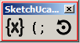
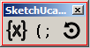
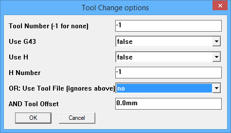

New in V1.4c (Nov 2016)
-
- Help updates
- added 3D section
- arcmoveij() now always used for arc outputs
- this improves arc accuracy and keeps Marlin happy
- Old files with arcs that have no center property will be rejected, they have to be recoded
- Early versions did not store the arc centers and they are needed for arcmoveij()
- Errant G0 move with no code removed from plungebore in Marlin mode.
- a bug prevented the correct output of a G0 move
- Marlin mode streamlined
- some changes to make Marlin code cleaner
- Solve failure to find profile path on Mac due to iOS changing version string
- The code was checking the iOS version to figure out where the files are, but that changed so it failed to find the files.
- Update translation file {- still need to add a lot of strings though
- The translation file is woefully out of date, but now has some new strings.
- Pocketing - new method for complicated faces
- Pocketing complicated shapes just got a whole lot easier!
New in V1.4b (July 2016)
-
- TABs in laser cut mode
- Tabs and Vtabs fixed for laser cutting.
- Do not use V-tabs, only half of a V-tab will be cut.
- Set tab depth to 0% 'to be removed' if you want the laser OFF during the tab cut.
- Fix for compatibility menu
- The order of multipass options was incorrect, preventing depth setting.
- Streamlined Countersinks and Counterbores
- They now avoid recutting the hole that has already been cut if it is larger than 2xBitdiam.
- Feed speeds adjusted.
- Feedrates
- Sometimes a required feedrate was not output because of using the wrong comparison method.
Now using notequal() to compare to 0.0001".
- Initial plungefeed rate will be output on the G90... header line so that there is always a defined feedrate.
- Toolchange
- Help updated with improved examples.
- Centerlines
- Fix for 'backtacking' when centerlines are sometimes cut forward and sometimes backward within
one curve.
New in V1.4a (June 2016)
- Bug fixes
-
- Many additions to help.
- New Features
-
- Centerline cuts: prevent retract when possible
- If doing multipass cuts, centerline cuts that form loops do not need to retract between passes since start and end point are equal.
- This applies to all cuts based on centerline cuts, centerline, fold, and pockets.
- Fast approach:
- Approach the surface using G00 to within 0.5mm, then switch to G01 to begin cutting.
This reduces cut time greatly when the safe height is relatively high, and to a lesser extent for normal safe heights.
- (This was already implemented for ramping cuts, and has now been added to non-ramping cuts).
- Very small arcs converted to lines
- Arc segments with radius <= 0.010" can cause problems with some simulators and controllers. Convert them to line segments.
Note that drawing such a small arc is almost impossible in Sketchup, but they can result from scaling a drawing, or from importing
a scanned DXF file.
- Chamfer wizard
- Tool to set cutter diameter and depth for a chamfer cut
- Accessed via Tools|Phlatboyz|Set Chamfer parameters
- Note: set the cutline AFTER using this tool, and delete and redo it if you change parameters. Generate Gcode directly after creating cut line.
- See the full HOWTO here
- Gcode Joiner
- adds default extension if not user supplied
- Number formatting
- remove trailing 0's in plunge holes to shorten lines for GRBL
- Plunge holes
- streamlined G00 moves when 'use reduced safe height' is true
- added 'force all Gcodes on' processing for spirals in plunge holes
- Laser cutter/engraver control
- Tick the Laser Control box on the
parameters dialog and G-code will be output suitable for laser cutting on a machine that uses spindle commands to control the laser.
The current control scheme replaces all Z movements (start and end of cuts) with M03 and M05 spindle motor on/off commands.
The M03 is combined with an S word giving PWM control of the laser power.
This value is set to the cut depth percentage of the current 'Spindle speed' set in the parameters dialog.
For example, if your controller accepts 10000rpm as the maximum spinde speed, then set that in the parameters dialog.
- Now, for a 100% deep centerline cut, laser on command will be
- M03 S10000
- and a 50% deep centerline cut will be
- M03 S5000
If you are using GRBL 0.9 the default max spindle speed is 1000.
If your laser only supports full on and full off and cannot use PWM, then always use 100% deep cuts (and a correctly set maximum spindle
speed as well) and the spindle control output will always be either on or off.
DO NOT select 'multipass', 'ramping' nor 'Gen3D' when Laser Control is desired.
Ramping and Gen3D will be turned off automatically.
Multipass can be used to get cleaner edges in some materials. Experiment for yourself!
Plunge holes will only create a dot at the center of the hole. The length of the delay at this dot can be
adjusted via the Hole Feature Options dialog.
- Large file load speed
- A very old version of SketchUcam (Phlatscript 0.918) used attributes that had to be upgraded for 0.919 and up.
- This upgrade checks every edge and takes a long time for large files.
- The upgrader is now turned off by default. If you have very old Sketchup files that are encoded
using 0.918 edge format (they will generate very bad G-code, if anything at all),
you need to delete all the cut lines and re-insert them.
New in V1.4 (Nov 2015)
- Bug fixes
-
- Fix for Phlatten tool.
- Since Make 2014, Phlatten has failed to actually phlatten due to not liking the order
used for deleting faces. Faces are now deleted separately from edge collection.
- Fold/centerline/pocket tool depth in VCB.
- The depth can now be set to floating point number, eg 10.6% or 34.15% etc.
- Inputbox error checking.
- All input boxes use exception rescuing to detect errors in number formats and 'retry'. This is a step on the way to
handling regionalized number formats.
- Note that a side effect of this is that the main parameters dialog will fail silently if it is given an invalid number and the
corresponding variable will not be set. For example if you type 45t for Safe Height the safe height
will not be changed AND you will not be notified.
- Joiner tool - bug in long filenames.
- When the joiner tried to create a comment from a long filename, the chunking operation failed. Replaced with .scan().
- Added features
- Make the path to the gplot program a string in options so it is preserved between versions.
- By setting a path to a program that can display Gcode files you can use any program that takes
a Gcode file as a parameter for preview.
- Tools|PhlatBoyz|Options|File options|Gcode plotter program
- set to 'default' to use Gplot.exe the default plotter
- set to the full path and filename of your choice of plotter program, such as NC-Plot.
- Multiselect pockets
- If multiple faces are selected when the pocket tool is selected, all the faces will be pocketed.
- All selected entities will be Unselected after this process.
- If only one thing is selected, nothing is done, process is ignored.
- Make sure you have the correct pocket parameters before doing the multiselect operation!
- Large plunge holes with sticky size
- Holding
down shift when clicking for a plunge hole allows you to set size, but
until now you had to do that for every hole. Now you can tap the HOME
key to set 'LARGE LOCK' on and be prompted for a hole diameter that
will persist until you select another tool or tap HOME again.
- Holes in a grid
- Select the Plunge hole tool
- Hold down ALT and select the point for the bottom left hole
- You will be prompted for the spacing and number of holes
- A grid of holes is created
- You can hold SHIFT at the same time and give a size for the gridded holes
- CounterSink/CounterBore tool

- CounterSink, extension of the plunge tool, does counter sinks at the top of holes.
- Grids and size selection same as for plunge tool.
- Depth is always overcut% - hopefully always deeper than the bottom of the countersink.
-
- CounterBore, does a counter bore on top of a hole.
- Grids and size selection same as for plunge tool.
- Depth is always overcut% - make sure it is deeper than the counterbore!
- Ramping is forced ON for the counterbore to prevent the unnecessary center drill op.
- Simple ABC axis commands
  
- On the Quicktools toolbar, use the rotate icon to set values for A, B and C axes, values will be output before all other motion, and zeroed after homing
- Toolchange
- 
The T icon on the Quicktools toolbar enables the use of toolchange
commands. For controllers that understand the 'Tx M6'
command you can output the command with a given tool number. Optionally include G43 (apply offset) and Hx, select offset.
- The alternative option for controllers that do not understand T1 commands is to include a 'macro' file of Gcode commands that
achieve the tool change for you. The tool commands can include a '%s' string: this is where the tool offset is inserted.
- Activate this toolbar by ticking the View|Toolbars|SketchUcam Quick Tools item.
- Rapid approach for Z plunge
- When starting a cut, Z will now rapid down to within 0.5mm of the surface before switching to plunge feed rate in the same way that ramping does.
This should make cutting with high safe heights much quicker.
|
 SketchUcam is a set of tools in the form of a plugin for Google
SketchUp. It allows for assigning of CNC cut/fold/drill/mill, etc.
functions to SketchUp designs as a full featured CAM solution. It was
designed for use with the Phlatboyz easy to assemble and learn CNC
machine kits and has since been extended to work with harder materials in the newer
breed of CNC routers.
For more information about these affordable Kits, please
visit Phlatboyz Machines
SketchUcam is a set of tools in the form of a plugin for Google
SketchUp. It allows for assigning of CNC cut/fold/drill/mill, etc.
functions to SketchUp designs as a full featured CAM solution. It was
designed for use with the Phlatboyz easy to assemble and learn CNC
machine kits and has since been extended to work with harder materials in the newer
breed of CNC routers.
For more information about these affordable Kits, please
visit Phlatboyz Machines